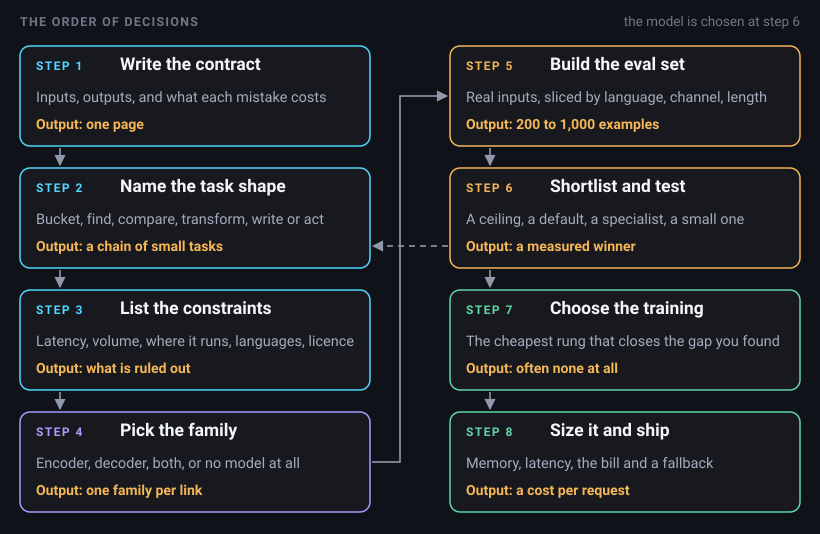
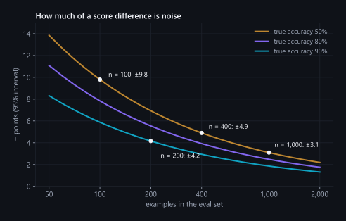
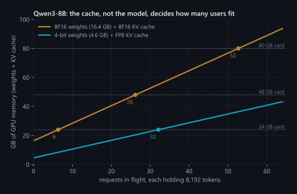

Which model should we use? A production framework for choosing architectures, models, evals and training, from the use case to the bill
"Which model should we use?" is the question I get asked most, by engineers, by product managers, by founders, and it nearly always comes first. It should come close to last. By the time the model is a real choice, six earlier decisions have narrowed the field to two or three candidates, and they've also settled most of what the system will cost, how fast it'll answer and how often it'll be wrong. The checkpoint matters less than people expect. The decisions around it matter more.
This post is the order I make those decisions in, written down so that it works on a use case I haven't seen yet. It's long because it tries to be complete: how to tell what task you actually have, when an encoder beats a decoder and the one time on this site it went the other way, how to search Hugging Face without being fooled by download counts, which public benchmarks are worth reading for which job, how to build the evaluation that actually decides, how much training a problem needs, what to do when your language or domain has no good model, and how to put a number on latency, memory and the monthly bill before you commit. It ends with six use cases worked end to end and a one-page sheet you can copy.
A word on the numbers. Where one comes from my own work, it links to the post or project where it was measured. Where it's arithmetic, the chart says so. Prices are from October 2026 and they move, so read them as the shape of the answer, not a quote.
The order of decisions
Every production AI system I've built or reviewed had to answer the same eight questions, and the order matters because each answer narrows the next. Here they are on one picture. The rest of the post takes them one at a time.

Two things about it. First, it loops. Testing candidates at step 6 regularly shows that what you called one task is really two, and you go back to step 2 with a better picture. Second, it runs per link, not per product. A real system is a chain of small tasks, and each link gets its own answers to steps 4 to 8. A meeting-minutes pipeline is speech recognition, then speaker diarization, then summarisation: three links, three different architecture families, and only one of them is a large language model.
Step 1: write the contract
Before anyone opens Hugging Face, write half a page that answers four questions. It sounds like paperwork. It's the cheapest step in the whole process and the one that saves the most.
What goes in? Not "customer messages". Real ones: how long, which languages and scripts, typed on a phone or transcribed from a call, clean PDFs or phone photos of crumpled forms. Pull twenty real examples and paste them into the document. If you can't get twenty real examples, that's your first finding, and it'll shape everything after it.
What has to come out? The exact form. One label from a fixed list, a JSON object with these fields, a ranked list of ten documents, a paragraph under 120 words. "A summary" isn't an answer. "Five bullets, each under 20 words, decisions and owners first" is.
Who or what consumes it? A person reading it on a screen forgives a lot and catches some errors. A downstream system parsing it forgives nothing and catches none. An agent's next step amplifies whatever you got wrong.
What does each kind of mistake cost? Mistakes are almost never symmetric, and the asymmetry decides your metric, your threshold and sometimes your architecture. In PII redaction a miss is a leak, and a false alarm mangles a record someone needed; when I built Kavach PII, GLiNER's 78% false-positive rate on clean documents mattered as much as its recall. A misrouted support ticket costs hours. A wrong number in a board report costs trust that doesn't come back.
Then two habits that pay for themselves many times over.
Let code do what code is good at
The model's output doesn't have to be the system's output. Kavach's users need character offsets so they can mask spans, but asking a language model to count characters gets you confidently wrong integers. So the model emits the values as JSON and twenty lines of Python find them in the source text. Recovering offsets that way from the gold annotations worked for 99.92% of 207,879 spans, and the same lookup flags any value the model invented, because an invented value isn't in the input. Arithmetic, date parsing, totals that must add up, IDs with checksums, permissions: all of that belongs in code that runs after the model, not in a prompt. On Docuvera360, tenant isolation and query safety are enforced by the database and by code, never by an instruction to the model, and that's the right default for anything that has to be true every time.
Check whether you need a model at all
Some part of the problem usually has a pattern. On the Kavach test set, regex and checksum rules scored 66.0 precision and 19.6 recall: precise on IBANs and email addresses, blind to names and addresses, because there's no pattern to write for a person. That's the usual shape. Rules handle the part with a pattern, and the model handles the part without one.
The same goes for repeated work. On Docuvera360, a scheduled alert check that re-ran an agent every time took 29 to 66 seconds. Once the agent's plan was saved and replayed with no model call, the check took 0.25 seconds. The cheapest model call is the one you don't make, and the habit of asking "does this need the model every time, or only the first time?" has saved me more latency than any choice of checkpoint.
Step 2: work out what kind of task you have
Nearly every request I see fits one of six shapes, or a chain of them. The names below are plain on purpose, because the technical names hide how similar some of these are.
| Shape | Sounds like | What comes out | Technical name |
|---|---|---|---|
| Put it in a bucket | "Route this ticket", "is this spam", "which document type is this" | One or more labels from a fixed list | Classification |
| Find things in it | "Pull out the policy number", "mask the personal data" | Pieces of the input, each with a label | Extraction, NER, slot filling |
| Compare two things | "Find the relevant documents", "is this a duplicate", "match CVs to jobs" | A score or a ranking | Retrieval, similarity, reranking |
| Rewrite it in another form | "Translate", "transcribe this call", "turn this page into text", "summarise" | New text, closely tied to the input | Sequence to sequence |
| Write something open | "Answer the customer", "draft the reply", "explain this clause" | Open text that may need facts from outside the input | Generation |
| Do something | "Book the slot", "query the ERP and build a chart" | Actions and tool calls, then text | Agents, tool use |
Five questions sort a new request into a shape in a couple of minutes:
- Is the set of possible answers closed? If you can list every valid output today, it's a bucket.
- Is the answer sitting in the input, word for word? Then you're finding, not writing.
- Does the output depend on two inputs at once, a query and a document, a CV and a job? That's comparing.
- Does the output follow the input sentence by sentence? That's rewriting, even when someone calls it summarising.
- Does it need facts that aren't in the input, or does it need to change something in the world? That's writing with retrieval, or acting.
And one question before all of them: is the input text at all? If it's rows in a table, start with gradient-boosted trees (XGBoost, LightGBM, CatBoost), not a language model. On typical tabular data they still beat deep networks (Grinsztajn et al., 2022), and they train in minutes on a CPU. If it's audio, the first links in the chain are speech links, and a language model arrives later, if at all. The diarizer in my Kaldi post is x-vectors, PLDA scoring and clustering, with no language model anywhere near the decision, and it writes a speaker map for an hour of audio on a CPU.
Most use cases are chains
Take "summarise our support calls and flag complaints". Said out loud, it's one task. Built, it's at least five: speech to text (rewrite), who said what (compare, in the form of diarization), masking personal data (find), complaint or not (bucket) and the summary itself (write). Each link has its own best architecture, its own eval and its own cost, and the bucket link almost certainly doesn't need a large model. The most useful hour you can spend in the first week is drawing that chain and deciding, link by link, which ones need a model at all.
Step 3: list the constraints that choose for you
Quality is what people argue about. Constraints are what actually eliminate candidates, so I write them down before I look at a single model and let them make the first cut.
Latency
Set a budget for each link, and think about what the user is doing while they wait. Search as you type needs tens of milliseconds; contextsearch answers a hybrid keyword-plus-embedding query in 34 ms on a laptop CPU. A chat answer can take seconds if the text streams, because what people notice is the time to the first word. A voice agent has to get its whole turn back in well under a second or the conversation feels broken. A nightly batch job has no latency budget at all, only throughput and cost. On Docuvera360 the database lookups inside an answer finish in under two seconds at the p90 while a nine-section board report takes about five minutes, and both are fine: one is interactive, the other runs as a queued job the analyst comes back to.
Decoders struggle with tight budgets for a physical reason. A decoder writes one token per pass, and each pass reads the model's weights out of memory, so a single stream can't go faster than memory bandwidth divided by the bytes it reads per token. I worked through this in detail in my field guide to inference speed; here's the version that fits on a napkin. Qwen3-8B in BF16 is 16.4 GB of weights. An NVIDIA L4 has 300 GB/s of memory bandwidth, so one stream tops out near 18 tokens a second, and a 300-token answer takes at least 17 seconds. On an H100 SXM's 3.35 TB/s the same model's ceiling is about 200 tokens a second. Quantise it to 4 bits, about 4.6 GB, and the L4's ceiling rises to about 65. An encoder classifying the same input does one pass and stops. When the budget is 50 ms, that difference in the shape of the cost matters more than any benchmark.
Volume
Requests per day times tokens per request is the whole bill for an API, and the GPU count when you host the model yourself. Write both numbers down even if they're guesses, along with the peak hour, because GPUs are sized for the peak and paid for around the clock.
Where it runs
A public API, your own cloud account, the client's data centre, a laptop, a phone, an air-gapped network. Each step down that list removes options. Docuvera360 runs every model on the client's own GPU, which meant open weights only and hardware the client would actually buy: its reasoning model came out of a bake-off of five quantised candidates, and it serves several analysts from one 48 GB card. If your data is personal or regulated (India's DPDP Act, GDPR, HIPAA), what your legal team will sign off on is as hard a constraint as latency.
Languages and scripts
List them with their share of traffic, and list the awkward ones separately: Hindi typed in Latin letters, Tamil mixed with English mid-sentence, Arabic with English product names. To a tokenizer these behave like different languages, and they're usually where the system fails first. There's a whole section on this below.
Licence
Read it before you test, not after you've fallen for a model. A few I checked on the Hub while writing this: Meta's NLLB-200 translation models and its MMS speech models are CC-BY-NC-4.0, so they're out for commercial use however good they are, while AI4Bharat's IndicTrans2, which covers all 22 scheduled Indian languages, is MIT. Microsoft's LayoutLMv3 for documents and ProsusAI's FinBERT are both CC-BY-NC-SA-4.0, non-commercial again. Qwen3 is Apache-2.0; Gemma and Llama ship under their own terms with use policies attached. And plenty of models carry no licence tag at all, including the third-most-downloaded result in the Hindi search later in this post. No licence doesn't mean free. It means you can't assume you're allowed.
People
Who gets paged when the GPU server falls over at 3 a.m.? If the honest answer is nobody, that's a constraint, and it points at an API.
| If the constraint is | Ask | It usually rules out |
|---|---|---|
| p95 under about 100 ms | What's the budget per link? | Generating more than a handful of tokens with a decoder on the hot path |
| CPU only | What hardware is actually in the data centre? | Decoders above a few billion parameters; anything without a quantised CPU path |
| Data can't leave | Is a third-party API allowed at all? | Closed-weight APIs |
| Commercial use | What does the licence file say? | CC-BY-NC, research-only and untagged models |
| A low-resource language | What share of traffic is it, and in which script? | English-first tokenizers, and models without per-language results |
| Peak traffic far above average | Can some of the work wait? | Self-hosted GPUs sized for the peak, unless the batch can be queued |
Step 4: encoder, decoder, or both
This is the part that confuses people most, so here it is in plain words first, then with the details that matter in production.
![Three transformer families. Encoder-only: every token attends to every token; reads the whole input in both directions and writes nothing itself; one pass with no loop; for classification, NER, embeddings and reranking. Decoder-only: each token attends only to the past; writes one token at a time, so output length is the latency; for open answers, chat, reasoning and tools. Encoder-decoder: the output attends to all of the input and its own past; reads once, then decodes; for translation, speech to text, summaries and page to text.](./resources/blog-8/architectures-mobile.svg)
An encoder reads
It takes the whole input at once, every word looking at every other word in both directions, and turns each token into a vector that captures what it means in context. It doesn't write anything. You put a small layer on top that turns those vectors into what you need: one label for the whole input, a label for each token, or a single vector you can compare against millions of others. BERT started this family in 2018. Today I'd reach for ModernBERT for English and code (150M parameters in the base size, an 8,192-token context), mmBERT for nearly everything else (the same architecture trained on more than 1,800 languages, released by Johns Hopkins in September 2025), XLM-RoBERTa when I want a proven multilingual workhorse and can live with 512 tokens, and DeBERTa-v3 when an English classifier has to squeeze out every last point.
The shape of the cost is what makes encoders so useful in production. One forward pass, no loop. Every input of the same length costs the same, batches line up perfectly, and a base-size model runs on a CPU. On Docuvera360, embedding a question with an int8 ONNX encoder takes 3.5 ms on two CPU threads, and moving the cross-encoder reranker to int8 ONNX made it 16 times cheaper per passage. You also get a usable score, a probability per label that you can threshold, calibrate and route on.
A decoder writes
It reads left to right, and its one skill is predicting the next token. Every other task gets phrased as "continue this text": a label, a list of entities, a translation, an answer. That's why decoders are general. Anything you can describe in words, a good instruction-tuned decoder can attempt with no training at all, and that's worth a great deal when you have no labelled data or the requirements change every week.
The cost is shaped the opposite way. The prompt goes through in one parallel pass, called prefill, and then every output token is another pass, called decode, so the length of the answer is the latency. The KV cache that holds the conversation grows with every token and every concurrent user. Outputs need parsing and validating, they can be fluent and wrong, and the probabilities behind them are a weaker confidence signal than an encoder's; the GPT-4 technical report shows calibration getting noticeably worse after post-training.
An encoder-decoder does both, in that order
The encoder reads the input once, in both directions, and the decoder writes the output token by token while looking back at the encoder's reading at every step. It's the natural shape when the output is a transformation of the input: translation, speech to text, summarisation, a page image to text. Whisper is one (1.5B parameters in large-v3), and so are NLLB, IndicTrans2, T5 and BART; T5Gemma (2025) rebuilt Gemma decoders into encoder-decoders. There are fewer modern general-purpose checkpoints in this family and less serving tooling, so in practice you choose it when a strong specialised model already exists for your transformation.
The mapping I start from
| Task shape | Start with | Why | Switch when |
|---|---|---|---|
| Bucket | Encoder with a classification head | One pass, a real score, runs on a CPU at any volume | Labels change weekly, you have no labelled data yet, or users need an explanation |
| Find | Encoder token classifier, or GLiNER for labels you name at run time | Spans come out aligned to the input | Values are messy, need normalising, or one model must cover many scripts (see below) |
| Compare | Bi-encoder embeddings for recall, a cross-encoder over the top 20 to 50 | Embeddings are computed ahead of time; the cross-encoder only sees a short list | Rarely. A decoder-based embedder such as Qwen3-Embedding if quality matters more than latency |
| Rewrite | A specialised encoder-decoder (Whisper, IndicTrans2) | Built for the transformation and tied to the input | A general decoder already handles your languages, or you need instructions and style |
| Write | Decoder | Nothing else writes open text | Never, but shrink it with fine-tuning once you know the job |
| Act | Decoder with tool calling, encoders for routing | Tools need planning and well-formed arguments | Use plain code for steps that are always the same |
Notice that a real system mixes them. contextsearch is BM25 plus embeddings fused with reciprocal rank fusion, then a cross-encoder over the top results: two encoder roles, no decoder. Docuvera360 runs its encoders on CPU in int8 and a decoder on the GPU. The architecture question is asked per link, not per product.
Classification with a decoder, done properly
If you do use a decoder for a bucket task, there are three ways, from worst to best for production. You
can ask it to write the label and parse what comes back, which is easy, but you'll get labels that
aren't in your list and no confidence. You can score each label instead: compute the log-probability the
model gives each label's tokens after your prompt and take the highest, so there's nothing to parse and
you get a score. Or you can put a classification head on the decoder and fine-tune it; transformers has
AutoModelForSequenceClassification for Llama, Qwen, Mistral, Gemma and most other decoder
families, reading the hidden state of the last token. That turns a decoder into something that behaves
like an encoder, one pass and a score you can calibrate, while you pay for the decoder's size.
The time the decoder won anyway
PII detection is the textbook encoder task: label each token as part of a name, an account number or nothing. GLiNER, built on a bidirectional encoder and trained for exactly this, was the honest competitor when I built Kavach PII, and it's genuinely good: zero-shot, arbitrary label names, 59.3 value-F1 on my 4,577-document test set. Kavach is a 270M decoder, a fine-tune of Gemma-3-270M, and it scores 92.0 on the same documents.
The reason isn't that decoders are better at NER. It was two specific weaknesses of the encoder on that data, and one design choice that took away the decoder's worst failure. GLiNER's script coverage fell apart outside English: 64.9 on English, 37.6 on Chinese, 35.8 on Tamil. And the inputs Kavach is meant for are messy in ways that span labels handle badly, like an account number spelled out loud with an "um" in the middle, or a call where half the conversation is Tamil written in Latin letters. A small decoder taught to copy values out as JSON handled both, as long as nobody asked it for character positions, which is exactly what the values-not-offsets contract in step 1 avoids. The price is latency. It's generative, a dense bank statement can need more than 800 output tokens, and long inputs are cut into 120-word windows with 25 words of overlap.
So the default holds most of the time, and the reason to break it should be a failure you can name and measure, not a general feeling that large language models are better at everything.
Mixture of experts, briefly
One decoder variant changes the arithmetic enough to mention. A mixture-of-experts model has many feed-forward blocks per layer and sends each token through a few of them. Qwen3-30B-A3B has 30.5B parameters and 128 experts per layer, and each token uses 8 of them, about 3.3B parameters. At a single stream it decodes like a small model, because only the active weights are read for each token, but it needs memory for all 30.5B; under heavy batching, different tokens hit different experts and the advantage narrows. That's the trade Docuvera360 made: a mixture-of-experts model with 4-bit weights, an FP8 KV cache and speculative decoding on one 48 GB card, which took decode across ten concurrent streams from 225 to 590 tokens a second against the profile it replaced.
Step 5: build the eval set before you look at models
Public benchmarks are for making a shortlist. Your own eval set is for making the decision. I build the second before I read a single model card, because once you've seen a model's outputs you start, without meaning to, writing tests it passes.
Reading public benchmarks
Three things go wrong with leaderboards, and knowing them is most of the skill. They saturate: Hugging Face retired its Open LLM Leaderboard in March 2025 after evaluating more than 13,000 models, saying the benchmarks had become obsolete and saturated. They leak: popular test sets end up in training data, so a high score can be memory rather than skill. And they average: the headline number on an embedding leaderboard blends dozens of tasks across many languages, and the one you care about, say retrieval in Hindi, can rank models very differently from the average. Read the slice that matches your task and language, and use the table below as a map of which slice that is.
| Your task | Public evals worth reading | What they won't tell you |
|---|---|---|
| Embeddings, search, RAG retrieval | The retrieval tasks in MTEB and its multilingual extension MMTEB, in your language; BEIR for out-of-domain retrieval | How your chunking and your documents behave |
| Classification, extraction | Results on a dataset close to yours, from the card or the paper; GLUE-style averages are saturated | Your label set, your noise |
| Multilingual understanding | Belebele (reading comprehension in 122 language variants), Global-MMLU, per language | Code-mixed and romanised text, which almost no benchmark covers |
| Translation | FLORES-200, scored with chrF++ and COMET, per direction | Your domain's terms and names |
| Instruction following | IFEval | Whether it keeps your format on your inputs |
| Tool use and agents | BFCL for function calling, τ-bench for multi-turn tool use with a simulated user | Your tools and your error paths |
| Coding | SWE-bench Verified, LiveCodeBench | Your codebase |
| Long documents | RULER; ignore single needle-in-a-haystack scores | Reasoning across your long documents |
| Speech recognition | The Open ASR Leaderboard for English, FLEURS per language for the rest | Your accents, microphones and crosstalk |
| Chat quality | LMArena preference rankings | Anything about your task; it measures what people like in open chat |
Building your own
Here's the recipe I use. It's more about discipline than size.
Start from real inputs: production logs if the system exists, and the people who'll use it if it doesn't. Synthetic examples earn their place for hard cases and rare classes, but an eval made only of synthetic data measures how well the model imitates your generator.
Decide the slices before anyone labels anything (language, channel, length, document type, and the rare classes that matter most), make sure each one has enough examples to say something, and report every slice on its own line. A 29-language average would have hidden GLiNER's 35.8 on Tamil.
Then size it with the noise in mind. With 200 examples at 90% accuracy, the 95% interval is about ±4.2 points, so a 3-point gap between two models on that set is noise. At 1,000 examples and 50% accuracy it's ±3.1. When you compare two models, run both on the same items and count where they disagree (McNemar's test), because a paired comparison sees differences that two separate intervals hide. I start at 200 to 500 and grow the slices that turn out to decide things.

Labelling deserves more care than it usually gets. Write a short guide, have two people label the same hundred items, and look at where they disagree, because that's where your task definition is vague. Then audit the gold itself. Kavach v2 scored 88.4 on its own test set; re-checking every label afterwards showed that set was missing roughly one value in ten, and on the rebuilt set v2 scores 79.0. Same model, a different and more honest number. If the gold is wrong, every comparison you make on it is wrong in the same direction.
Put in the cases where the right answer is nothing: clean documents with no personal data, tickets that belong to no queue, questions your documents can't answer. Kavach has a probe of 480 documents built entirely by code, with 180 planted look-alikes, strings that look like personal data and aren't. Kavach v3 tagged none of them and GLiNER tagged 178. A model that's never tested on "nothing here" will find something every time. The same probe answers a second question. Kavach scored 90.4 on it, close to its 92.0 on the main set, which suggests it learned the task rather than the habits of whatever generated its training documents. So test on data your generator didn't make, too.
The metric should price the mistakes. That means precision and recall rather than accuracy whenever classes are imbalanced or errors are asymmetric, with the operating threshold chosen on a dev split and the result reported on a test split you never tuned on; the diarizer post is a worked example, including the cliff a badly placed threshold falls off. Score extraction at the level users care about, the whole value rather than tokens. Score retrieval with recall@10 and nDCG on 20 to 50 real queries, which is what contextsearch's eval command is for. For open text, write a rubric and use a language model as the judge, but check the judge against a hundred human ratings first, and prefer pairwise "which is better" judgments to 1-to-10 scores, which drift.
Last, log cost and latency in the same run: tokens in, tokens out, latency and the exact model version on every row. A model that wins by a point and costs four times as much hasn't won yet.
Find the ceiling first
Before testing anything small, run the strongest model you can get access to, usually a frontier API, on the eval. If it can't do the task, a smaller model won't either: the problem is the task definition, the input quality or the labels, and you've found that out in a day instead of a quarter. If it can, you have a target, and often a labelling engine for training something smaller later. Read the provider's terms on using outputs for training before you rely on that.
Step 6: find and shortlist real checkpoints
Searching the Hub without being fooled
The Hugging Face Hub has filters for task, language, licence, library and parameter count, and they're useful. They're also declared by whoever uploaded the model, and the default sort by downloads measures popularity, CI pipelines and age, not quality. Here's what happens if you take them at face value. On 18 October 2026 I asked for token-classification models tagged Hindi, under a billion parameters, sorted by downloads:
from huggingface_hub import HfApi
api = HfApi()
models = api.list_models(
pipeline_tag="token-classification", # the task filter on the Hub
filter=["hi"], # a language tag, as the uploader declared it
num_parameters="max:1B",
sort="downloads",
limit=10,
expand=["downloads", "tags", "safetensors"],
)
for m in models:
lic = next((t.split(":", 1)[1] for t in (m.tags or []) if t.startswith("license:")), "none")
params = m.safetensors.total if m.safetensors else None
print(f"{m.id:55s} {m.downloads or 0:>9,} downloads licence={lic:8s} params={params}")The top two results were sentence-segmentation models. They do use token classification, but they won't find a single entity for you. Third was an XLM-RoBERTa-large fine-tuned on English CoNLL-2003 NER, with no licence tag. A language tag means the card claims the language. It doesn't mean the model does your task in it. Use the search to collect candidates, then read each one.
Five minutes with a candidate
For each model that survives the search, I spend five minutes before running anything.
Open config.json first, because it tells you what the model actually is. The
architectures field names the family: XLMRobertaForMaskedLM or
ModernBertForMaskedLM is an encoder, Qwen3ForCausalLM a decoder,
WhisperForConditionalGeneration or T5ForConditionalGeneration an
encoder-decoder. max_position_embeddings is the context (514 for XLM-RoBERTa, which means
512 usable tokens, and 8,192 for ModernBERT and mmBERT), and num_hidden_layers,
num_key_value_heads and head_dim are what you need for the memory arithmetic
in step 8.
Then the licence, read from the licence file rather than the tag, and whether the weights sit behind an agreement. Licences can differ inside one family: Qwen2.5-VL-7B-Instruct is tagged Apache-2.0 on the Hub, and its 3B sibling has no licence tag at all, so you have to open the file to find out what you're allowed to do.
Then the card's evidence: what data, which languages in what proportion, evaluated on what. The red flags are no evaluation at all, evaluation only on the test split of the data it was trained on, a merged model at the top of a leaderboard with no training details, and a re-upload or quantisation with no link back to the original. The Hub's model tree helps with that last one. It shows which base a checkpoint came from, its fine-tunes and its quantisations, so you can prefer the original organisation's upload and trace a fine-tune back to its base, whose licence and training data come along with it.
Finally, the files. Safetensors rather than pickled .bin files, which can run code when
they're loaded. If loading needs trust_remote_code=True, you're running the uploader's
Python, so read it, and pin the revision so it can't change under you.
If your text isn't English, there's a sixth check: tokenizer fertility, the number of tokens a model spends per word of your text. The languages section explains why it turns straight into money. It takes a minute to measure:
from transformers import AutoTokenizer
texts = [l.strip() for l in open("my_sample.txt", encoding="utf-8") if l.strip()]
words = sum(len(t.split()) for t in texts) # Chinese, Japanese, Thai: count characters instead
for name in ["Qwen/Qwen3-8B", "jhu-clsp/mmBERT-base", "FacebookAI/xlm-roberta-base", "ai4bharat/IndicBERTv2-MLM-only"]:
tok = AutoTokenizer.from_pretrained(name)
n = sum(len(tok(t, add_special_tokens=False).input_ids) for t in texts)
print(f"{name:35s} {n / words:.2f} tokens per word")The shortlist
Three to five candidates make a good shortlist, and each should answer a different question. I always include a ceiling, the strongest model I can use, usually a frontier API, to show what's possible. Next to it goes the boring default, the most-used model of the right family and size, which shows what a safe choice gets you. If a regional or domain model exists (AI4Bharat's for Indian languages, a biomedical encoder for clinical text), it goes in as the specialist, to find out whether specialisation is worth a smaller ecosystem. And there's always a small one, the model I'd be happy to serve at the expected volume, because it tells me what the ceiling's extra quality actually costs.
Run them all through the same harness, on the same eval, on the hardware you'll deploy on, and record quality per slice, p50 and p95 latency, peak memory and cost per thousand requests. One table, one decision. For Docuvera360's reasoning model it was a bake-off of five quantised candidates on vLLM, run on the kind of card the client would actually buy.
Step 7: how much training it needs
![The training ladder, cheapest at the bottom. 0 no model: rules, lookups, SQL, a saved plan. 1 prompt it. 2 retrieval and tools, for knowledge gaps. 3 fine-tune an encoder, for a fixed label set at volume, with hundreds to a few thousand labels. 4 fine-tune a decoder with LoRA, for format, style and behaviour or to distil a big model into a small one. 5 preference tuning or RL with a checkable reward. 6 continued pretraining for a language or domain the model never read. 7 pretrain from scratch, when no model exists for the data.](./resources/blog-8/training-ladder-mobile.svg)
Training is a ladder, and the rule is to climb only as far as the gap you've measured. The most common mistake I see is a jump to rung 4 because fine-tuning sounds like progress, when the gap was a rung 2 problem all along. The results from step 6 tell you which gap you have.
| What you see in the eval | The gap | The rung |
|---|---|---|
| It's wrong about your products, policies, prices or anything recent | Knowledge | 2: retrieval or tools. Fine-tuning is a poor way to add facts; in a direct comparison, retrieval beat it for injecting new knowledge (Ovadia et al., 2023) |
| It knows the answer but the format, tone or label set is off, or it ignores half the instructions | Behaviour | 1 first (a better prompt, examples, a schema), then 4: supervised fine-tuning |
| A fixed label set, plenty of examples, and it has to be cheap | Cost at volume | 3: fine-tune an encoder |
| The big model is right but too slow or too expensive | Size | 4: distil, by fine-tuning a small model on the big one's outputs; then quantise |
| Several plausible answers and it picks the weaker ones, or success can be checked by code | Preference | 5: DPO on preference pairs, or RL with a verifiable reward |
| Garbage in your language or domain, and the tokenizer explodes | Language or domain | 6: continued pretraining, usually with a tokenizer fix first |
| No model has seen anything like this data | Everything | 7, or a model that isn't a language model |
Rungs 1 and 2: prompting and retrieval
A surprising share of "the model can't do it" turns out to be "nobody told it clearly". Give it the output schema, two or three real examples including a hard one, and constrained decoding so the JSON always parses, and run the eval again before deciding anything. When the gap is knowledge, retrieval is the fix, and it's a system of its own with its own eval. When a retrieval-augmented system gives a wrong answer, check first whether the right passage reached the model at all. In my experience that's where most of the failures are, and no amount of decoder tuning fixes a passage that never arrived.
Rung 3: fine-tuning an encoder
Hundreds to a few thousand labelled examples per task, more if there are many classes. With only tens of examples per class, SetFit (contrastive fine-tuning of a sentence encoder, then a light classifier on top) works far better than its data size suggests. Training takes minutes on one GPU and serving runs on a CPU. Plot a learning curve as you go: train on 25%, 50% and 100% of your labels, and if the curve is still climbing at 100%, more labels will beat any amount of hyperparameter tuning.
Rung 4: supervised fine-tuning of a decoder
Start with LoRA, which trains small low-rank adapters instead of every weight and fits on one GPU; move to full fine-tuning for models under a billion parameters if memory allows. Data is hundreds to tens of thousands of input-output pairs, and coverage and correctness beat quantity: deduplicate, hold out a test split, and include the hard cases. For scale, Kavach v3 trained in six hours on one 8 GB laptop GPU, and the supervised stage in my Hindi adaptation post was 12,099 translated pairs and 18 minutes for a 135M model. Watch for forgetting: if users still need the model's general abilities, mix some general data back in and keep a general eval next to your task eval.
Synthetic data makes this rung affordable, and it's where most of the risk hides. Generate with a strong model, then audit as if you didn't trust it, because you shouldn't. In the Kavach post, the section heading says it plainly: the audit was worth more than the training run. Distillation is the same idea aimed at cost: the big model labels, the small model learns, and the small one serves.
Rung 5: preference and reinforcement learning
When "correct" can be checked by a script (the answer matches, the code passes its tests, the JSON validates, the label is right), reinforcement learning with a verifiable reward, such as GRPO, works even at small scale; the Hindi post runs it on a laptop. When quality is a judgment call, DPO on pairs of better and worse responses is the simpler tool. Don't start here. Both sharpen behaviour that supervised training already put in place.
Rungs 6 and 7: continued pretraining, and from scratch
Continued pretraining is for when the model has barely read your language or domain. It's the same next-token objective, started from the pretrained weights and pointed at your raw text. In the Hindi post it was 49.2M tokens with 10% English mixed back in, 68 minutes for a 135M model, after a tokenizer fix; labs do the same thing at 100B tokens. Pretraining from scratch is rarely the right product decision. It makes sense when no existing model has seen anything like your data and you own a great deal of it.
The expensive part isn't the GPU
Training runs are cheap now. A LoRA run on a model under 10B parameters is hours on one GPU, and an H100 rents for roughly $2 to $4.50 an hour on demand at most specialised clouds as of October 2026, and about $7 to $12 at the hyperscalers. The expensive parts are the labelled data, the eval, and keeping the trained model current as the inputs drift. Budget for those first.
Step 8: latency, memory and the bill
Where the time goes
A request through a typical system makes some lookups (milliseconds), an encoder pass or two (milliseconds on a CPU) and, if there's a decoder, a prefill that grows with the prompt and a decode that grows with the answer. Docuvera360's measured stages show the pattern: 3.5 ms to embed a question, 20 to 110 ms for a spreadsheet query, a 0.54 s median for a database query, 0.65 s to rerank ten passages on a CPU, and then 12 seconds to five minutes for the model to reason and write.
The decoder dominates, so that's where the levers are, and the biggest is taking the model out of repeated work, like the alert check that went from 29 s to 0.25 s. After that comes generating fewer tokens. Ask for label IDs, short JSON and field values instead of prose, cap the output length, and use stop sequences; output tokens are the latency, and most APIs charge several times more for them than for input tokens. Keeping prompt prefixes stable is nearly free and lets the server reuse the cached prefill, which on Docuvera360 took a 37,000-token prefill from 27.8 s to 5.3 s.
Batching is why single-stream speed isn't throughput. Continuous batching in vLLM or SGLang serves many requests in the same passes over the weights: 106 tokens a second for one stream on that 48 GB card, 590 across ten. Quantisation helps too, but measure it. 8-bit is close to free and 4-bit is usually fine on large models, while small models pay more: on the 270M Kavach model, Q8_0 lost 0.1 points, Q4_K_M lost 1.1 and Q2_K lost 5.3, and my llama.cpp post has the method for measuring it properly. Speculative decoding, where a cheap draft proposes tokens and the big model checks several at once, had 65 to 69% of its drafted tokens accepted on Docuvera360. And on the encoder side, int8 ONNX on a CPU is what made the reranker 16 times cheaper per passage.
Will it fit? The memory arithmetic
GPU memory is weights plus KV cache plus runtime overhead. Weights are parameters times bytes per parameter: 2 for BF16, about 0.56 for 4-bit once the block scales are counted. The KV cache per token is 2 × layers × KV heads × head dimension × bytes per value. For Qwen3-8B, from its config.json, that's 2 × 36 × 8 × 128 × 2 bytes = 147,456 bytes, 144 KiB per token in BF16. One 8,192-token conversation holds 1.2 GB. Sixteen of them hold 19.3 GB, more than the 16.4 GB the weights take.

So on a 24 GB card in BF16, Qwen3-8B fits about six such conversations; with 4-bit weights and an FP8 cache, about thirty-two. The cache, not the model, decides how many users fit, which is why Docuvera360's FP8 KV cache mattered as much as its 4-bit weights: it holds 11.76 full 131,072-token requests on one 48 GB card. If you'd rather not do this by hand, Easy-vLLM does the arithmetic for any model id and card in the browser and tells you what to change when it doesn't fit.
API or your own GPUs
An API's cost per request is input tokens times the input price plus output tokens times the output price, less whatever discounts the provider gives for cached prompt prefixes and asynchronous batch jobs. Multiply by requests per month and that's the model. The only hard part is honest token counts, which is why the eval logs them.
Self-hosting is a different formula: cost per million output tokens = hourly price ÷ (tokens per second × 3,600 ÷ 1,000,000) ÷ utilisation. Say you measure 1,000 tokens a second of aggregate throughput on a card that rents for $2.50 an hour. Fully busy, that's 3.6 million tokens an hour, about $0.69 per million. Busy 20% of the time, which is normal for traffic that peaks during office hours, it's $3.47 per million, five times as much. Utilisation, not the GPU's price, decides whether self-hosting is cheap. The 1,000 tokens a second is an illustration; measure yours on your model, your card and your prompt lengths, with the same harness as the eval.
For reference, in October 2026 an H100 cost roughly $2 to $4.50 per GPU-hour on demand at most specialised clouds and about $7 to $12 at the hyperscalers, after list prices rose at several providers between August and October (IntuitionLabs' comparison, updated 11 October 2026), and Google Cloud's single-L4 g2-standard-4 machine listed at about $0.71 an hour on demand (Google's accelerator-optimized pricing). Check the provider's own page before you budget.
My rule of thumb: start on an API unless the data can't leave, the latency needs the model next to the user, or the volume is large and steady. Move to your own GPUs when the monthly API bill is well above what the GPUs would cost running around the clock, two of them for redundancy, plus the time of the people who keep them running. Encoders are the exception: a fine-tuned encoder on a CPU box is usually the cheapest component in the whole system, and it's worth hosting yourself from day one.
Cascades, fallbacks and after launch
Send easy cases to a cheap model and hard ones up the chain. That needs a confidence signal: encoders give you one; for decoders, use validators (schema checks, Kavach's value-must-be-in-the-source check), the log-probability of the chosen label, or agreement between two samples. Validators also make retries cheap and targeted. When a Kavach output fails to parse, one retry of that document with a repetition penalty of 1.1 recovered 102 of 108 failures, while applying the penalty to every request had cost 1.4 points.
Everything needs a fallback (rules, a smaller model, or a human queue) and a pinned version: a Hub revision hash, or a dated API model snapshot, so the model can't change under you. Launch in shadow mode first, watching the same slices you evaluated, and keep feeding a sample of production traffic back into the eval set every month, because the inputs will drift away from the set you launched with long before the model gets worse.
When the good models don't exist: languages and domains
Most model-selection advice quietly assumes English and a well-covered domain. A lot of real work is neither, and this is where the framework needs the most care.
Measure the gap before choosing a fix
Three numbers: tokenizer fertility on your text; the model's loss in bits per character on a held-out sample of your text, which stays comparable across tokenizers; and the score on your eval set, sliced by language. The first is free and takes a minute, and it's the one people skip. These are the numbers I measured on 1,000 held-out Hindi documents for the Hindi adaptation post; English costs every one of these tokenizers about 1.33 tokens per word.
| Tokenizer | Tokens per Hindi word | Against English (1.33) |
|---|---|---|
| SmolLM2 | 5.32 | 4.0x |
| Qwen2.5 | 4.51 | 3.4x |
| Llama 3.2 | 2.57 | 1.9x |
| Sarvam-1 | 1.44 | 1.1x |
| Gemma 3 | 1.35 | 1.0x |
That multiplier is a tax on everything downstream. An API priced per token charges four times as much for the same Hindi request. Decode takes four times as long, the KV cache holds four times as much per word, and the context window fits a quarter of the text. And vocabulary size isn't coverage: Qwen2.5's vocabulary is three times SmolLM2's and still spends 4.51 tokens per Hindi word, because of how its pre-tokenizer splits words at vowel signs, which the Hindi post takes apart in detail.
The options, cheapest first
The cheapest is a multilingual model that already covers the language. Check per-language results (Belebele, FLORES) and your own eval slice rather than the list of languages on the card, because "supports 100 languages" often means it saw some text in each. Next is a regional model. For Indian languages there's AI4Bharat (IndicBERT v2, IndicTrans2 and the IndicConformer speech models, all MIT), Sarvam, and Google's MuRIL (Apache-2.0); other regions have their own, such as SEA-LION for Southeast Asian languages, AfroXLMR for African languages and Swallow for Japanese. Their ecosystems are smaller, so check the licence and the serving path as carefully as the quality.
If neither is good enough, cross-lingual transfer is the option I see underused most. Fine-tune a multilingual encoder like mmBERT or XLM-R on labelled data in a language you have, and apply it to the one you don't. For classification and NER this works better than people expect, and a few hundred labelled examples in the target language close much of the remaining gap (Lauscher et al., 2020). Translation is the other shortcut: machine-translate your training data into the target language and train there (translate-train), or translate incoming text into English and use an English model (translate-test). Translate-test is the quickest to build, but it puts a second model in the latency path and mangles names, product codes and mixed-language text, so I treat it as a stopgap.
The expensive option is to adapt the model itself: extend the tokenizer, continue pretraining on text in the language, then fine-tune. In the Hindi post this took a 135M English model to the point where it ties a 1.7B model on a Hindi task.
Code-mixed and romanised text
In Indian customer traffic, a lot of Hindi, Tamil and Telugu arrives typed in Latin letters and mixed with English mid-sentence. Almost no public benchmark covers it, language identification mislabels it, and tokenizers treat it as noisy English. Make it its own eval slice, built from real traffic. Transliterating it into the native script is a normalisation option for some pipelines (AI4Bharat's IndicXlit does this), but test it on your data, because it can turn the English words in a sentence into nonsense.
Test every text-processing step around the model in each script, too. Two that bit me: Python's
\b word boundary doesn't work against Devanagari, because the vowel sign that continues a
word isn't an alphanumeric character, which broke span matching in Kavach; and the GPT-2-style
pre-tokenizer pattern \p{L}+ splits every Hindi word at every vowel sign before BPE even
starts. Neither shows up in an English test suite.
Domains without good models
Clinical notes, legal filings, insurance claims, maintenance logs. Domain encoders exist (BiomedBERT, Legal-BERT, FinBERT), but many are years old, English-only, and some are non-commercial, like the FinBERT above. More often the better start is a modern general model plus domain-adaptive pretraining on your own unlabelled text, which gave consistent gains across domains in Gururangan et al. (2020). For labels, let the ceiling model pre-label and have domain experts correct, which is much faster than labelling from scratch; spend expert time where the model is least sure; and generate rare cases from templates in code, so you know they're right. Keep the eval set labelled by people from the start. If the ceiling model pre-labels your test set, you'll be measuring agreement with it.
Speech is where the gap is widest
Speech recognition quality varies enormously by language, accent and microphone, and a word error rate on a leaderboard says little about your call centre. Whisper large-v3 is the general default; Meta's MMS covers more than a thousand languages but is CC-BY-NC-4.0; for Indian languages, AI4Bharat's IndicConformer is MIT. Measure on your own audio, transcribed by hand, a few hours if you can manage it. That's the job my Speech Annotation Tool exists for: run local or hosted models over a folder of recordings, have people review the transcripts, and export a dataset you can evaluate and train on.
Six use cases, worked end to end
Here's the framework run on six problems that come up in any year of production work. Each one has the decisions in a table and then the part that usually goes wrong. Where I give a volume, it's there to make the arithmetic concrete; the reasoning is the point.
1. Routing support tickets in English, Hindi and Hinglish
| Contract | Ticket text in; one of 40 queues out, with a confidence. A misroute costs hours. |
| Shape | Bucket |
| Constraints | Say 200,000 tickets a day; p95 under 100 ms; data stays in your cloud; three languages, one of them code-mixed |
| Family | Multilingual encoder with a classification head |
| Eval | 1,000 recent tickets stratified by language and queue, labelled with the queue each ticket was finally resolved in |
| Shortlist | mmBERT-base, XLM-R base, MuRIL; a frontier API as the ceiling |
| Training | Rung 3, on last year's tickets, whose labels already exist |
| Serving | int8 ONNX on CPU; tickets under the confidence threshold go to a decoder or a person |
| Watch for | Noisy labels from routing history, and queues that change when the org chart does |
The labels are the surprise here. Historical routing looks like free training data, and it nearly is, but use the queue a ticket was resolved in, not the one it was first sent to, or you'll train the model to repeat the old misroutes. The Hinglish slice will probably score lowest, so give it its own threshold. When a new queue appears, a decoder can route to it zero-shot from a written description until there are a few hundred examples to retrain on. The large model is in this system, but only for the tail.
2. Answering questions over internal documents, on-prem
| Contract | A question in; an answer with citations out. A wrong answer with a confident citation is the worst outcome. |
| Shape | Compare (retrieval), then write |
| Constraints | Documents can't leave the building; open weights only; one GPU |
| Family | Encoders to retrieve and rerank, a decoder to write |
| Eval | Two sets: 50 real questions with the passages that answer them (recall@10, nDCG), and the same questions with reference answers (faithfulness, judged by a model checked against human ratings) |
| Shortlist | BM25 plus a multilingual embedder (BGE-M3, multilingual-e5, Qwen3-Embedding-0.6B), a cross-encoder reranker (bge-reranker-v2-m3), and the largest decoder the GPU serves well |
| Training | Usually none. Rung 2 is the whole design. |
| Serving | Embedder and reranker on CPU in int8; decoder on the GPU with prefix caching |
| Watch for | Retrieval failures blamed on the decoder; chunking that splits tables; questions that need a database, not a document |
contextsearch is a small version of the retrieval half. The decoder is the expensive part and the one everyone wants to tune, but evaluate retrieval on its own first: if the right passage isn't in the top ten, no decoder can answer from it. And look hard at the questions people actually ask. Many questions inside a company are about numbers that live in an ERP database, and that's a query problem, not a document problem. That's the problem Docuvera360 is built around: it answers those questions with read-only database queries the model makes as tool calls, alongside document search.
3. Pulling fields out of scanned claim forms and invoices
| Contract | A scanned page in; a JSON object with 15 typed fields out. Every field is right or flagged for review. |
| Shape | Find (from an image), then validate |
| Constraints | Varied scans and phone photos; a review team exists; data stays in your cloud |
| Family | A small vision-language model reading the page directly, or OCR followed by a text model |
| Eval | 300 pages stratified by document type and scan quality; exact match per field, and the share of documents with every field right |
| Shortlist | OCR (Tesseract or PaddleOCR) plus a text decoder; a vision-language model such as Qwen2.5-VL-7B (Apache-2.0); a frontier multimodal API as the ceiling. Skip LayoutLMv3 for commercial work; its licence is non-commercial. |
| Training | Rung 1 with a JSON schema, then rung 4 on reviewer-corrected outputs once there are a few hundred |
| Serving | A GPU for the page reader; validation in code; low-confidence documents to the review queue |
| Watch for | Fields that look right and aren't: totals that don't add up, dates in the wrong format, a policy number with two digits swapped |
The design work here is in the validation, not the model. Check every field that can be checked in code (totals add up, dates parse and fall in range, IDs pass their checksums, the policy exists in the system) and send failures to a reviewer with the field highlighted. The reviewers' corrections then become fine-tuning data at no extra cost. Budget the hardware honestly: on Docuvera360, a vision-language page reader in 2.3 GB of GPU memory reads a scanned page in 1 to 2 seconds, and the CPU fallback takes 43 to 65 seconds a page.
4. Minutes from meeting recordings
| Contract | An hour of audio in; minutes out: decisions, owners and deadlines, each tied to who said it |
| Shape | Rewrite (speech to text), compare (who spoke when), write (the minutes) |
| Constraints | Batch, not real time; accents and crosstalk; recordings may be confidential |
| Family | An encoder-decoder (Whisper) or a CTC or transducer model for speech; an x-vector diarizer; a decoder for the minutes |
| Eval | Word error rate on an hour of your own meetings transcribed by hand; diarization error rate; for the minutes, a checklist of decisions and owners per meeting, scored by people who were there |
| Shortlist | Whisper large-v3, Parakeet (English, CC-BY-4.0), IndicConformer for Indian languages; the Kaldi diarizer or pyannote; any capable decoder |
| Training | Usually none for the decoder. A diarizer back-end trains on your own labelled turns in under a minute. |
| Serving | Speech recognition dominates compute; queue it on a GPU or run it on a CPU overnight |
| Watch for | A fluent summary of a bad transcript; speaker labels that swap halfway through |
MoM AI is this pipeline: six speech-to-text options including Whisper running locally, speaker labels where diarization is available, and any OpenAI-compatible model for the minutes. Two things from building it carry over to any version of this. Every speech provider returns a different shape (word timestamps, utterances, speaker labels that vary), so normalise them into one format before the language model sees anything. And a long recording hits two unrelated ceilings, the provider's upload size, which is a bytes problem solved by splitting the audio, and the model's context window, which is a tokens problem solved by summarising in parts and merging. Beyond that, errors compound down the chain: a summary can't recover a name the transcript got wrong, and a decision attributed to the wrong person is worse than none, so measure each link on its own and spend effort upstream first.
5. A complaint classifier for a language with almost no data
| Contract | Customer messages in Odia, often typed in Latin letters; complaint or not, plus one of 8 categories |
| Shape | Bucket |
| Constraints | Fifty labelled examples to start; a small team; CPU serving |
| Family | Multilingual encoder |
| Eval | 300 real messages labelled by two native speakers, split by script (Odia script and Latin) |
| Shortlist | mmBERT-base, XLM-R base, IndicBERT v2; translate-test into English with IndicTrans2 as a comparison; a frontier API as the ceiling and the pre-labeller |
| Training | Rung 3 with cross-lingual transfer: train on labelled Hindi or English complaints, then add Odia labels as reviewers produce them |
| Serving | CPU |
| Watch for | The romanised slice, and the pre-labeller's mistakes turning into your gold |
Start by measuring: tokenizer fertility on 500 real messages for each candidate, and the ceiling model's accuracy on each slice. Use the ceiling model to pre-label a few thousand messages and have the two native speakers correct them rather than label from scratch. Keep the 300-message eval set labelled by hand from the start, never pre-labelled, or you'll be measuring agreement with the API instead of accuracy. Then let the learning curve tell you when to stop labelling.
6. Redacting personal data in 29 languages
| Contract | Text in (transcripts, chats, OCR output); character spans with one of 43 labels out. A miss is a leak; a false alarm damages a record. |
| Shape | Find |
| Constraints | 29 languages in many scripts; modest hardware; noisy inputs |
| Family | The textbook answer is an encoder token classifier. The measured answer was a small decoder that emits values. |
| Eval | 4,577 held-out documents with audited gold, plus hard-case and code-built probes |
| Shortlist | GLiNER-PII, Presidio, regex and checksum rules, Gemma-3-270M fine-tuned |
| Training | Rung 4: LoRA, six hours on one 8 GB laptop GPU |
| Serving | A 196 MB quantised GGUF within half a point of full precision; 120-word windows with overlap |
| Watch for | Window size, and word boundaries in scripts where \b doesn't work |
Step 4 covers why the decoder won. The part that generalises is how it was found: the default was the right starting hypothesis and the wrong answer, and only an eval with per-language slices and "nothing here" probes could show that. Without those, GLiNER's average and its false alarms would both have looked acceptable.
The one-page version
If you keep one thing from this post, keep this table.
| Decision | The question | The default answer |
|---|---|---|
| 1. Contract | What goes in, what comes out, who consumes it, what does each mistake cost? | Twenty real examples pasted into the doc; code owns everything that must always be true |
| 2. Shape | Closed answers? In the input? Two inputs? Tied to the input? Outside facts or actions? | Split it into a chain, one shape per link; ask whether each link needs a model |
| 3. Constraints | Latency per link, peak volume, where it runs, languages, licence, who's on call | Written down before any model card is read |
| 4. Family | Bucket, find, compare: encoder. Rewrite: encoder-decoder. Write, act: decoder. | An encoder wherever the output is closed, until a measured failure says otherwise |
| 5. Eval | Real inputs, sliced, audited, with "nothing here" cases? | 200 to 500 to start, reported per slice, models compared on the same items |
| 6. Shortlist | A ceiling, a default, a specialist, a small one? | Same harness and hardware; quality, p95 latency, memory and cost in one table |
| 7. Training | Which gap: knowledge, behaviour, cost, preference, language? | The lowest rung that closes it; more labels while the learning curve still climbs |
| 8. Serving | Weights plus KV cache, tokens per request, utilisation? | An API for decoders at first, encoders on a CPU you own, a fallback and a pinned version |
What this doesn't tell you
It's an order of decisions and a set of defaults, not a substitute for measuring on your own data. Every default here has exceptions, and the post includes one of them. Prices and leaderboards move monthly, so the October 2026 figures will be stale soon; the arithmetic won't. I've deliberately not compared closed APIs by name or price, because they change faster than a post like this can, and the framework treats them as one more candidate on the shortlist, usually the ceiling. The memory and margin-of-error charts are arithmetic: real serving adds overhead, and real eval sets aren't perfectly independent samples, so both are optimistic. And agents get one row in a table here, when evaluating multi-step tool use properly is a subject of its own.
Closing note
"Which model should we use?" does have an answer. It's just the sixth answer, not the first. Write down what goes in and what comes out, split the work into links, let the constraints cross candidates off, pick the family per link, and build an eval set from real inputs before you read a model card. By then the model choice is usually one table and a short conversation, and most of the cost, speed and reliability of the system has already been decided, by decisions that were cheap to get right and expensive to get wrong.
The other posts on this site go deep on single links in that chain: what quantisation costs, how a diarizer is tuned, how a model learns a new language, how a small model beat a purpose-built one. This one is the map that connects them. If you use it on a problem of your own and it breaks somewhere, I'd like to hear where.
Resources & Links
Projects referenced:
Docuvera360, for on-prem serving, the stage timings and the measured fixes; contextsearch, for hybrid retrieval and reranking on a CPU; MoM AI, for the meeting-minutes chain; Speech Annotation Tool, for building a speech eval set; llama.cpp on one laptop, for measuring what quantisation costs.
Papers cited:
Grinsztajn et al., trees on tabular data (2022); Ovadia et al., fine-tuning or retrieval (2023); Gururangan et al., Don't Stop Pretraining (2020); Lauscher et al., From Zero to Hero (2020); SetFit (2022); GPT-4 technical report (2023); ModernBERT (2024); mmBERT (2025); T5Gemma (2025); LoRA (2021); DPO (2023); DeepSeekMath, which introduced GRPO (2024).
Benchmarks and leaderboards:
MTEB, MMTEB, BEIR, Belebele, Global-MMLU, FLORES-200 (in the NLLB paper), IFEval, BFCL, τ-bench, LiveCodeBench, RULER, Open ASR Leaderboard, LMArena, and the Open LLM Leaderboard archive.
Tools, models and prices:
huggingface_hub's HfApi; Qwen3-8B's config.json, the source of the memory chart; vLLM and SGLang for serving; mmBERT-base, ModernBERT-base, IndicTrans2 and Whisper large-v3 on the Hub; H100 prices from IntuitionLabs' comparison and L4 prices from Google Cloud, both read in October 2026. Licences were read from each model's Hub page on 18 October 2026.